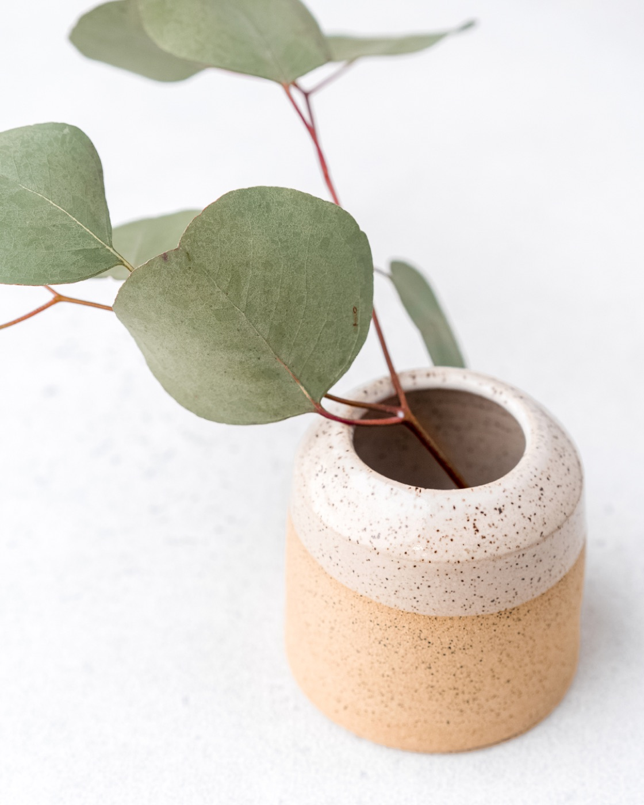
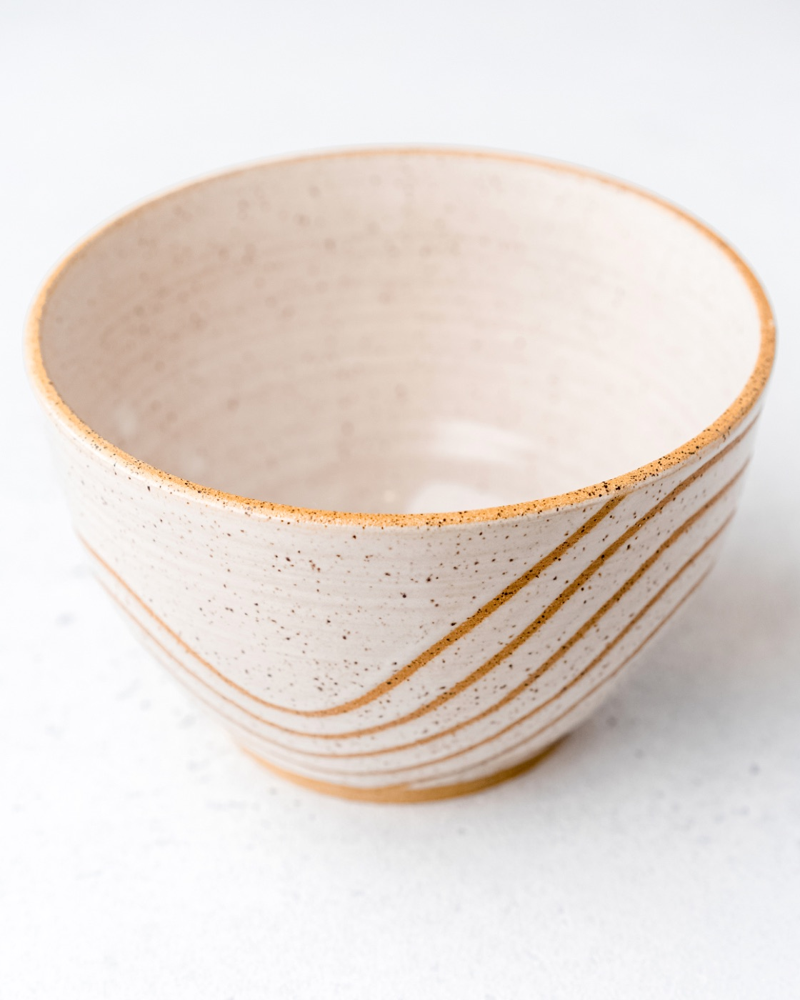
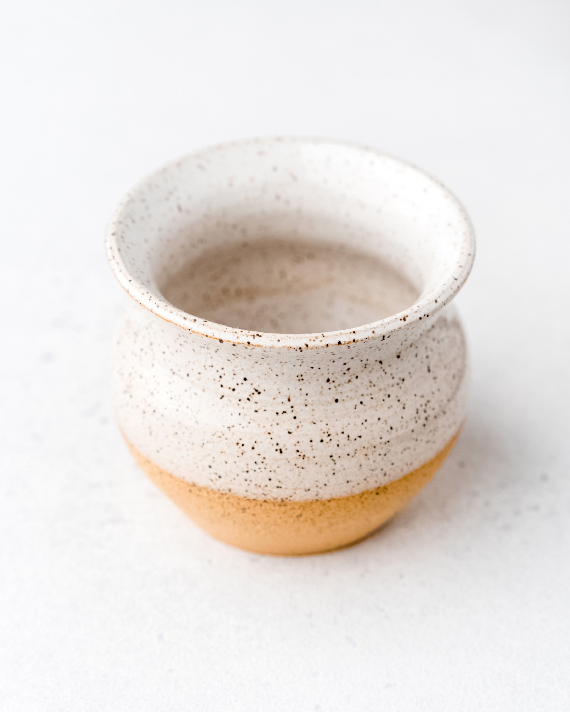
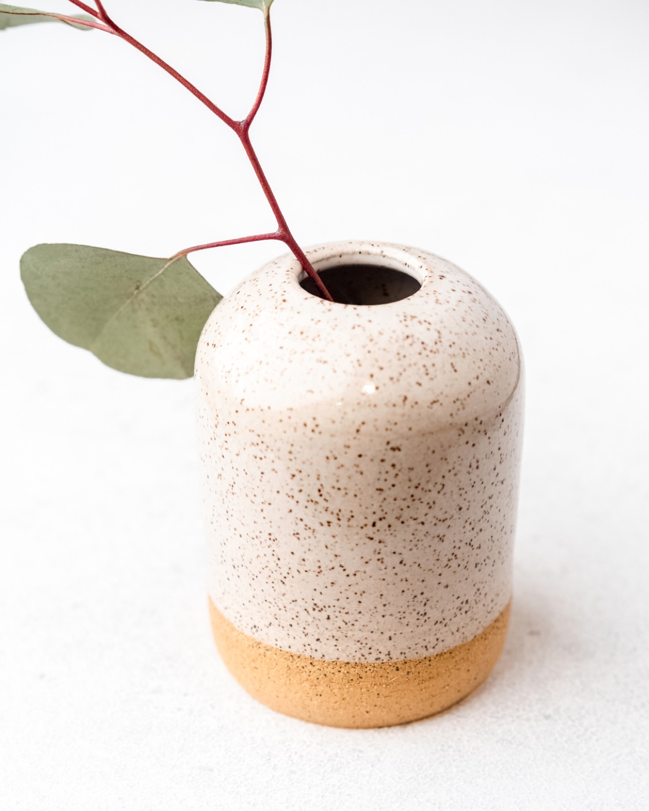

kuya studio
Quiet objects, intentionally made by hand.
A pottery studio in San Francisco making functional pieces for everyday. Thrown on the wheel or slipcast from molds made in-house, finished in soft, earthy glazes.
Kuya: Tagalog for “older brother” is a nod to family, thoughtfulness, and love that these pieces are meant to bring into your life. Made in small batches, with intention and care.



